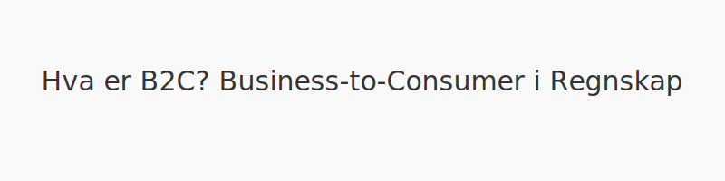
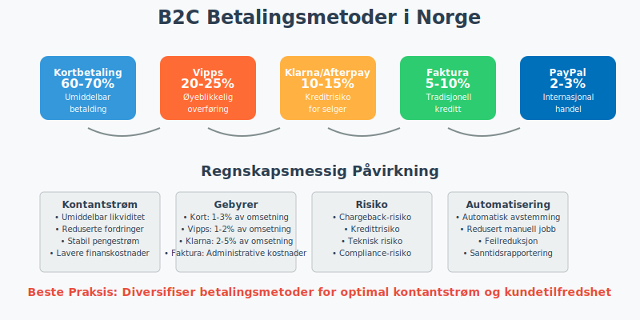
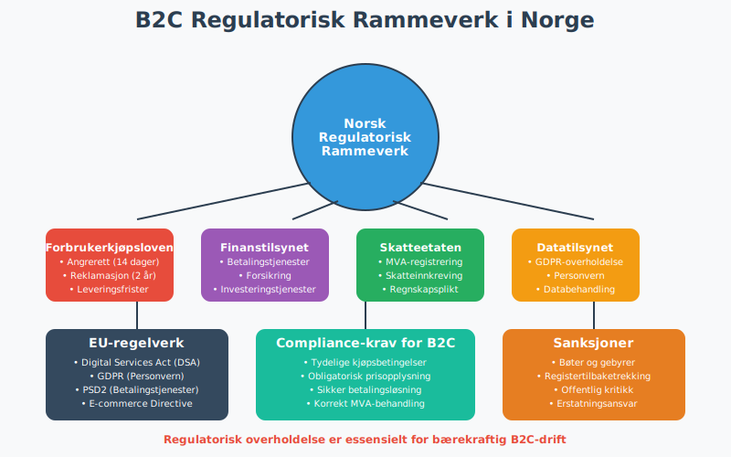
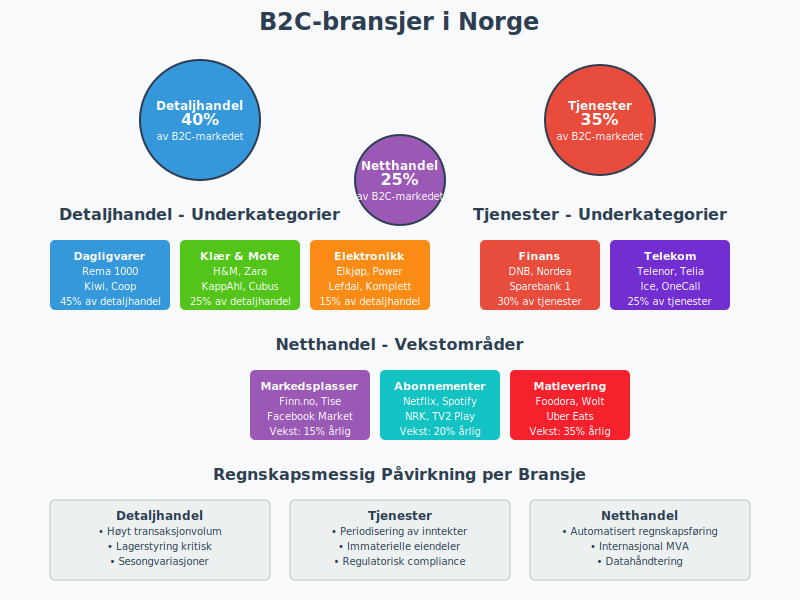
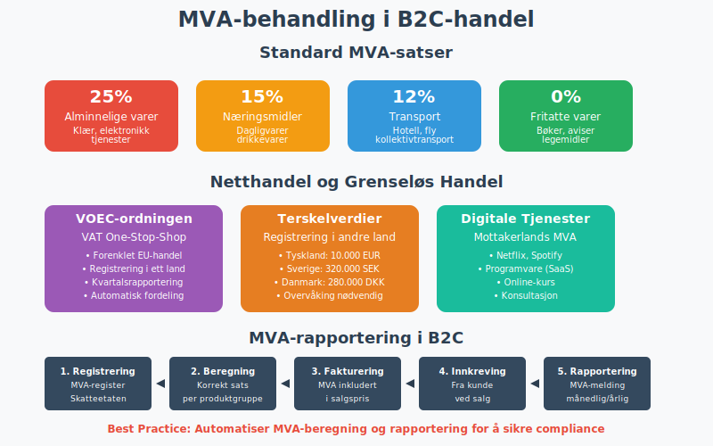
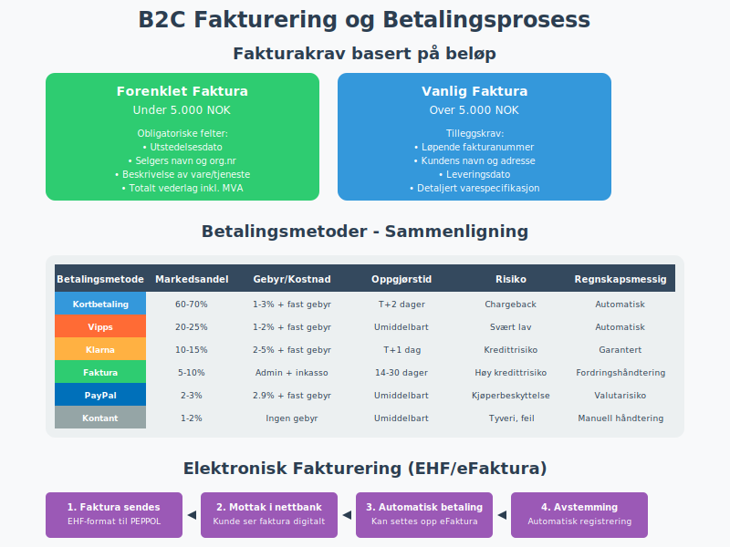
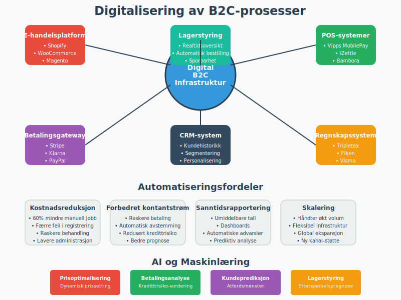
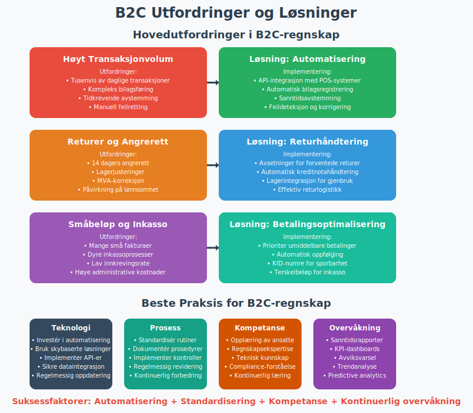
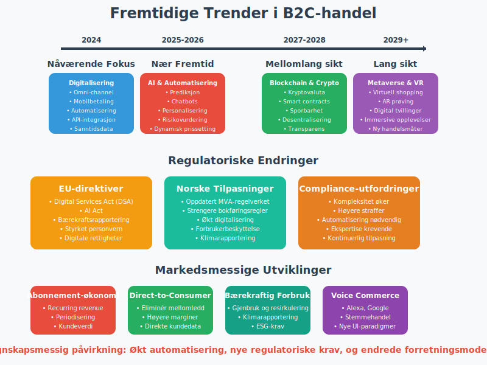

B2C (Business-to-Consumer) refererer til handel der en virksomhet selger varer eller tjenester direkte til privatpersoner. I norsk regnskap har B2C-spesifikke krav til MVA-behandling, fakturering, kundefordringshåndtering og forbrukerbeskyttelse.

Definisjon og Betydning i Regnskap
B2C, eller Business-to-Consumer, beskriver salg av varer og tjenester fra en bedrift direkte til privatpersoner, i motsetning til B2B-transaksjoner. I norsk regnskap påvirker B2C blant annet MVA-behandling, fakturering og kundefordringer.
B2C-handel omfatter alle former for detaljhandel, fra fysiske butikker til netthandel og tjenesteytelser. I Norge utgjør B2C-sektoren en betydelig del av omsetningen for mange virksomheter.

Regulatoriske Rammer for B2C i Norge
Forbrukerkjøpsloven
Forbrukerkjøpsloven regulerer salg til forbrukere og gir særskilte rettigheter som påvirker regnskapsføringen:
| Rettighet | Regnskapsmessig konsekvens | Eksempel |
|---|---|---|
| Angrerett | Avsetning for forventede returer | 14 dagers angrerett på netthandel |
| Reklamasjon | Garantiavsetninger for defekte varer | 2 års reklamasjonsrett |
| Leveringsfrist | Forsinket inntektsføring ved leveringsforsinkelse | Lovens presumptive leveringsfrist |
| Prisavslag | Justering av inntekter | Kvalitetsmangel gir rett til prisavslag |
Finanstilsynets Regulering
Finanstilsynet regulerer B2C-virksomheter som tilbyr:
- Finansielle tjenester til forbrukere
- Betalingstjenester og elektronisk betaling
- Forsikringsprodukter til privatpersoner
- Investeringstjenester for privatinvestorer

Sentrale Kjennetegn ved B2C-transaksjoner
| Kjennetegn | Beskrivelse | Regnskapsmessig påvirkning |
|---|---|---|
| Volum og enkelhet | Mange små transaksjoner med lavere ordreverdier | Forenklede bilagsrutiner og automatisert bilagsforing |
| Umiddelbare betalinger | Kortbetaling, Vipps eller eFaktura | Redusert kundefordring og økt likviditet |
| Forbrukerrettigheter | Angrerett og forbrukerbeskyttelse etter forbrukerkjøpsloven | Krav til avsetninger for returer og garantier |
| MVA-plikt | MVA beregnes og faktureres ved salg til privatpersoner uten omvendt avgiftsplikt | Standardisert MVA-behandling på 25% for de fleste varer |
| Sesongvariasjoner | Betydelige svingninger i salgsvolum | Krav til budsjett og likviditetsstyring |
| Markedsføringskostnader | Høye kostnader til kundeakvisisjon | Spesielle krav til kostnadsforing av markedsføring |
B2C-bransjer i Norge
Detaljhandel
Detaljhandel er den største B2C-sektoren i Norge:
- Dagligvarehandel (Rema 1000, Kiwi, Coop)
- Kles- og motehandel (H&M, Zara, norske kjeder)
- Elektronikk og teknologi (Elkjøp, Power, Lefdal)
- Møbler og innredning (IKEA, Skeidar, Bohus)
Tjenesteytelser
Tjenestebransjen omfatter:
- Finans og forsikring (banker, forsikringsselskaper)
- Telekom (Telenor, Telia, Ice)
- Transport (Ruter, flyselskaper, ferger)
- Helse og velvære (private helsetjenester, treningssentre)
Netthandel og E-handel
Digital handel vokser raskt:
- Markedsplasser (Finn.no, Tise, Facebook Marketplace)
- Abonnementstjenester (Spotify, Netflix, NRK)
- Levering av mat (Foodora, Wolt, Uber Eats)
- Reiseportaler (Norwegian.no, Expedia, Booking.com)

MVA og B2C - Detaljert Behandling
Standard MVA-behandling
I B2C-transaksjoner må selger normalt beregne og fakturere Merverdiavgift (MVA) på alle salg til privatpersoner:
| MVA-sats | Produktkategori | Eksempler |
|---|---|---|
| 25% | Alminnelige varer og tjenester | Klær, elektronikk, restaurantbesøk |
| 15% | Næringsmidler | Dagligvarer, drikkevarer |
| 12% | Persontransport og overnatting | Fly, hotell, kollektivtransport |
| 0% | Fritatte varer | Bøker, aviser, legemidler |
Netthandel og Grenseløs Handel
For netthandel gjelder særskilte regler:
- VOEC-ordningen (VAT One-Stop-Shop) for EU-handel
- Terskelverdier for registrering i andre land
- Tjenester levert elektronisk følger mottakerlands MVA-regler
- Fysiske varer følger avsenderlands regler til 10.000 EUR
Fjernleverbare Tjenester
Fjernleverbare tjenester har spesielle MVA-regler:
- Strømmetjenester (Netflix, Spotify)
- Programvare og digitale tjenester
- Rådgivning levert digitalt
- Undervisning online

Fakturering og Betalingsprosesser i B2C
Betalingsmetoder i B2C
I B2C-markedet er det vanlig med flere betalingsmetoder:
| Betalingsmetode | Andel av B2C-handel | Regnskapsmessig behandling |
|---|---|---|
| Kortbetaling | 60-70% | Umiddelbar kontantstrøm, gebyr til kortselskap |
| Vipps | 20-25% | Øyeblikkelig betaling, lave gebyrer |
| Klarna/Afterpay | 10-15% | Kredit til kunde, risiko for tap på fordringer |
| Faktura | 5-10% | Tradisjonell kundefordring |
| PayPal | 2-3% | Internasjonale transaksjoner |
| Kontant | 1-2% | Synkende, hovedsakelig fysiske butikker |
Elektronisk Fakturering
eFaktura og EHF (Elektronisk Handelsformat) brukes for:
- Abonnementstjenester (strøm, telecom, forsikring)
- Større enkjøp hvor kunden ønsker betalingsfrist
- B2C-tjenester til små bedrifter
- Offentlige tjenester (gebyrer, avgifter)
Fakturakrav for B2C
Forenklet faktura kan brukes for salg under 5.000 NOK:
- Utstedelsesdato
- Selgers navn og organisasjonsnummer
- Beskrivelse av varen/tjenesten
- Totalt vederlag inkludert MVA
- MVA-sats eller -beløp
Vanlig faktura kreves for salg over 5.000 NOK og må inneholde:
- Løpende fakturanummer
- Kundens navn og adresse
- Leveringsdato
- Betalingsvilkår
- Detaljert varespecifikasjon

Digitalisering og Automatisering i B2C
Teknologisk Infrastruktur
Digitalisering gir betydelige fordeler i B2C:
- Nettbutikk-integrasjon med betalingsleverandører
- Automatisk avstemming av småbeløp
- API-integrasjon og Automatisering for realtidsbehandling
- Personalisert kommunikasjon ved utsendelse av betalingspåminnelser
E-handelssystemer
Populære e-handelsplattformer i Norge:
| Plattform | Egnet for | Integrasjonsmuligheter |
|---|---|---|
| Shopify | Små til mellomstore bedrifter | Omfattende API-integrasjon |
| WooCommerce | WordPress-baserte nettsider | Fleksibel tilpasning |
| Magento | Store bedrifter | Avansert funksjonalitet |
| Squarespace | Enkle nettbutikker | Brukervennlig interface |
| Norske løsninger | Lokal støtte | Tilpasset norsk regelverk |
Automatisering av Regnskapsoppgaver
Automatiserte prosesser reduserer manuell arbeid:
- Transaksjonshåndtering fra POS-systemer
- Lagerstyrring med automatisk vareregistrering
- Kundekommunikasjon via chatbots og automatiske e-poster
- Rapportering med sanntidsdata
Kunstig Intelligens i B2C
AI-baserte løsninger forbedrer:
- Prisoptimalisering basert på etterspørsel
- Betalingsmønster-analyse for kredittrisiko
- Kundeatferd-prediksjon for lagerstyring
- Personaliserte anbefalinger for økt salg

Vanlige Utfordringer og Beste Praksis
Operasjonelle Utfordringer
| Utfordring | Løsning og beste praksis | Regnskapsmessig påvirkning |
|---|---|---|
| Chargeback og misbruk | Sikker betalingsinfrastruktur og tydelige vilkår | Avsetning for forventede tap |
| Angrerett og retur | Effektive retureprosedyrer og oppdatert kundekommunikasjon | Justering av inntekter og lagerbeholdning |
| KID-felt og sporbarhet | Bruk av KID-nummer for automatisk avstemming | Forbedret bankavstemming |
| Håndtering av småbeløp | Automatisering av betalingsoppfølging og minimal manuell håndtering | Reduserte administrative kostnader |
| Sesongvariasjoner | Likviditetsbudsjett og fleksible finansieringsløsninger | Planlagt kontantstrøm |
Regnskapsmessige Utfordringer
Spesielle utfordringer i B2C-regnskap:
Høyt Transaksjonvolum
- Automatiserte bilagssystemer reduserer manuell registrering
- Konsolidert rapportering av småtransaksjoner
- Effektive avstemmingsprosedyrer for daglige oppgjør
Komplikasjoner ved Returer
- Returprosedyrer må reflekteres i regnskapet
- Lagerjustering ved returnerte varer
- MVA-behandling av kreditnotaer
Rabatter og Kampanjer
- Volumrabatter påvirker bruttofortjeneste
- Kundelojalitetsprogrammer skaper forpliktelser
- Sesongkampanjer påvirker periodisering
Compliance og Etikk
Personvern (GDPR)
Personvernregelverket påvirker B2C-virksomheter:
- Databehandling av kundeinformasjon
- Samtykke til markedsføring
- Sletting av kundedata
- Sikkerhet ved datalagring
Bærekraft og ESG
Miljø-, sosial- og styringshensyn (ESG) blir viktigere:
- Karbonavtrykk fra transport og emballasje
- Sirkulærøkonomi og resirkulering
- Etisk sourcing av produkter
- Sosialt ansvar i verdikjeden

Fremtidige Trender i B2C
Teknologiske Innovasjoner
Nye teknologier former B2C-markedet:
- Kryptovaluta som betalingsmiddel
- Blockchain for leveransesporing
- Augmented Reality (AR) for produktvisning
- Voice Commerce via smarte høyttalere
Regulatoriske Endringer
Kommende regelendringer påvirker B2C:
- Digital Services Act (DSA) i EU
- Strengere personvernregler
- Bærekraftsrapportering for større selskaper
- Nye MVA-regler for digital handel
Markedsmessige Utviklinger
Strukturelle endringer i B2C-markedet:
- Omni-channel strategi blir standard
- Abonnement-økonomi vokser
- Direkte-til-forbruker (D2C) øker
- Bærekraftig forbruk blir viktigere

Sammendrag og Anbefalinger
B2C-virksomheter i Norge bør fokusere på:
- Effektiv regnskapsføring med automatiserte systemer
- Compliance med forbrukerlovgivning
- Digital transformasjon for konkurransedyktighet
- Bærekraft som konkurransefortrinn
- Kunderfaring som differensieringsfaktor
Ved å implementere beste praksis innen B2C-regnskap kan virksomheter oppnå:
- Reduserte administrative kostnader
- Forbedret kontantstrøm
- Økt kundtilfredshet
- Bedre compliance
- Forbedret lønnsomhet
For videre informasjon om relaterte temaer, se våre guides om detaljhandel, omsetning og kundefordringer.